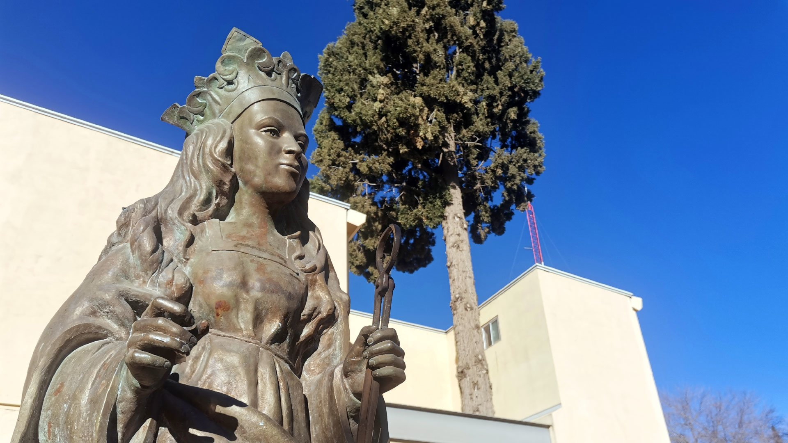

Universitaria
Universitaria 
Una carrera exigente necesita un plan
Entre clínicas, prácticas y exámenes, el tiempo se acaba rápido. Esta guía junta lo básico que nos ha funcionado: agendar con bloques, estudiar con técnicas que sí retienen y cuidar el sueño y la mente.
Dato rápido: estudiar 25 minutos con descanso suele rendir más que dos horas seguidas sin pausa. En Estudio puedes probarlo con el temporizador.